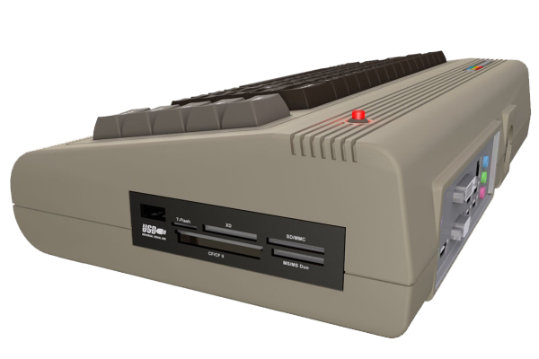
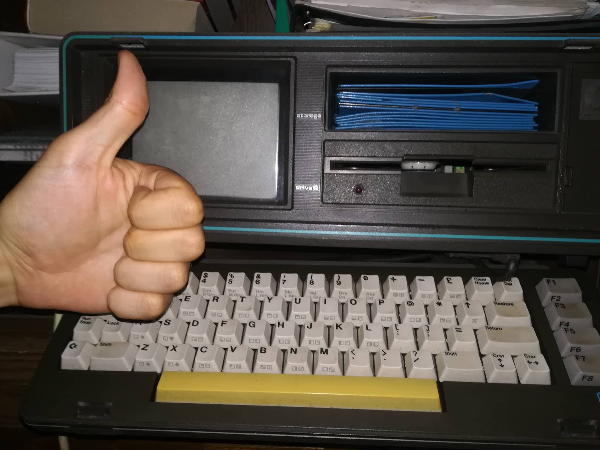

az 1980-as évek kultikus személyi számítógép-típusa. A Jack Tramiel által alapított Commodore Business Machines 1982 januárjában jelentette be, és szeptemberben adta ki 595 dolláros áron, ami ezért a pénzért addig elérhetetlen grafikai és hangképességeket nyújtott. A C64 1982-ben az év számítógépe lett. A Commodore a VIC-20 sikere után kezdte el fejleszteni, amikor piacra került, valóságos csodának számított. E számítógépet akkoriban cseppet sem csak játékgépnek tartották, hanem sok helyen, Magyarországon kiváltképpen, komoly vállalati alkalmazásokra is használták. A C64 megjelenése (1982) után pár évvel, a 80-as évek közepén, vagy inkább végén terjedt el Magyarországon, mivel 1985-ig COCOM-listás volt és sokan csak az évtized végére tudták összespórolni itthoni viszonylatban igen borsos árát.
Először érthetően a vállalati szférából szorult ki, az otthoni felhasználók köréből azonban tulajdonképpen mai napig sem teljesen,
mert van aki nosztalgiából máig megtartotta és be-bekapcsolja. Sőt, a géptípus újabban reneszánszát éli, oly módon,
hogy különböző C-64 emulátorprogramokat készítettek, melyek PC gépeken futva C-64-es virtuális környezetet biztosítanak a felhasználónak.
2011 májusában a Commodore USA nevű cég kiadta a C64x jelű gépet, amely külsejében az eredeti gépet idézi, de egy 1,8 GHz-es,
kétmagos Intel Atom processzoros hagyományos PC; Ubuntu Linuxszal, beépített DVD-olvasóval (opcionálisan Blu-ray),
alaplapra integrált Nvidia videokártyával és 2 vagy 4 GB memóriával. Teljes értékű C64-ként is tud működni, akár tévéhez is csatlakoztatható.

A C64 megjelenése sok mindent vont maga után (akarva, akaratlanul). Ekkor alakult ki az otthoni számítógépezés kultúrája,
ekkor szerette meg a számítástechnikát az akkori fiatal (ma már negyvenes) generáció, ráadásul gyakorlatilag a C64 miatt alakult ki a teljes mai PC-s játékipar.
Ugyancsak ez a kis gép „felelõs” azért,
hogy létrejöttek olyan sosem volt hobbik, mint a „cracker” vagy játékokat és szoftvereket nagyban másolgató felhasználók, illetve a számítógépes zeneszerzõk.
